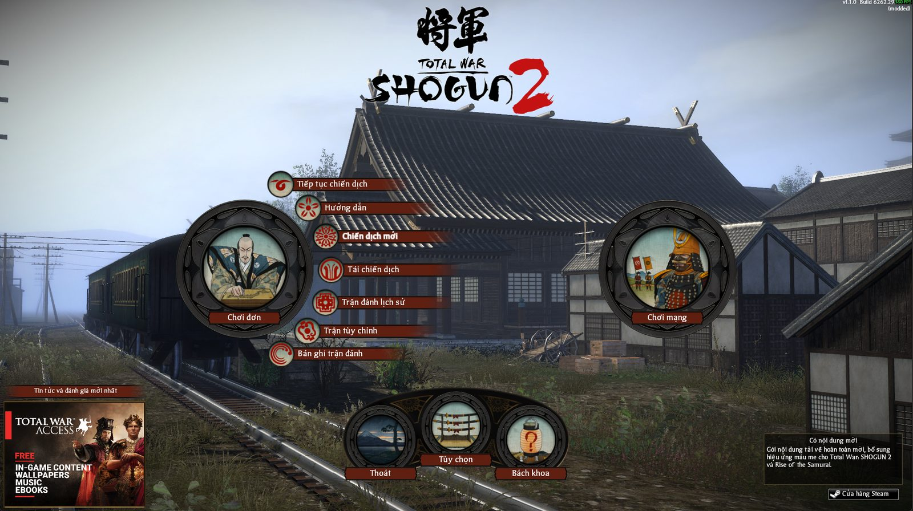
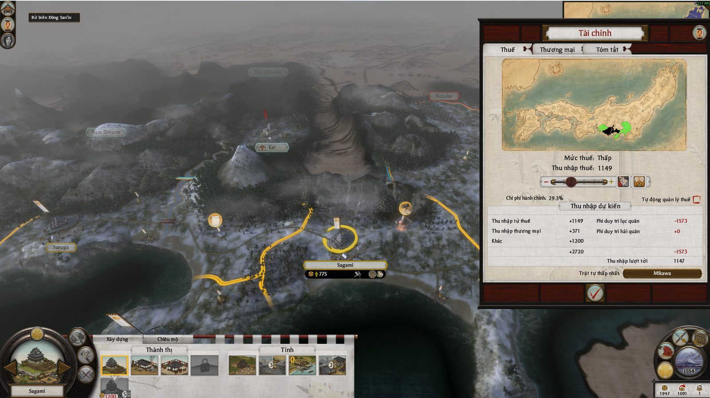
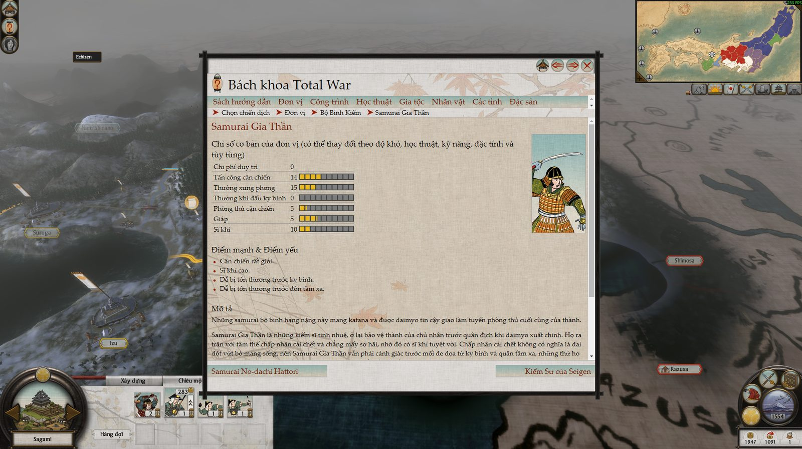

● Hoàn thànhChiến thuậtThời gian thựcLịch sử
Total War: SHOGUN 2
Kèm Rise of the Samurai và Fall of the Samurai
Giới thiệu bản Việt hóa
Bản Việt hóa đầy đủ cho Total War: SHOGUN 2 và hai bản mở rộng, có font tiếng Việt và bộ cài một nút. Văn phong theo không khí Nhật thời Chiến Quốc: cố vấn gọi người chơi là "chúa công", quân mình là "quân ta", sứ giả ngoại giao xưng hô tùy thái độ thân thiện hay thù địch. Thuật ngữ được thống nhất xuyên suốt (Sĩ khí, Tháo chạy, Danh vọng gia tộc, Thương điếm…) và đã quét máy toàn bộ để không lỗi biến, không sót chữ.
Đã dịch những gì
- 24.745 chuỗi chữ trong game (~431.000 từ): giao diện, tooltip, đơn vị, công trình, học thuật, kỹ năng tướng và ninja/metsuke/tăng nhân
- Sự kiện chiến dịch, nhiệm vụ, lời hịch trước trận, thoại ngoại giao
- Lời cố vấn (chữ), hướng dẫn chơi, danh ngôn màn hình tải
- Hai bản mở rộng: Rise of the Samurai (Chiến tranh Genpei) và Fall of the Samurai (Chiến tranh Boshin)
- Bách khoa trong game: 1.527 trang, kể cả chú thích khi rê chuột
- Font: thêm 92 chữ có dấu vào font Bardi gốc của game, giữ đúng nét chữ
Hướng dẫn cài đặt
- Thoát hẳn game, tải file zip và giải nén
- Chạy CaiVietHoa_Shogun2.exe — bộ cài tự tìm thư mục game; không thấy thì bấm "Đổi…" (Steam: chuột phải game → Manage → Browse local files)
- Bấm "Cài Việt hóa", đợi tới 100%
- Mở game là có tiếng Việt, giữ ngôn ngữ English
- Muốn gỡ: chạy lại bộ cài → "Gỡ Việt hóa"
Ảnh trong game


